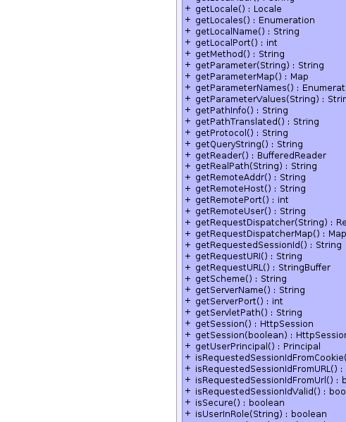
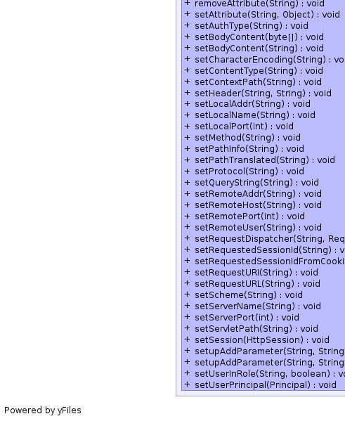
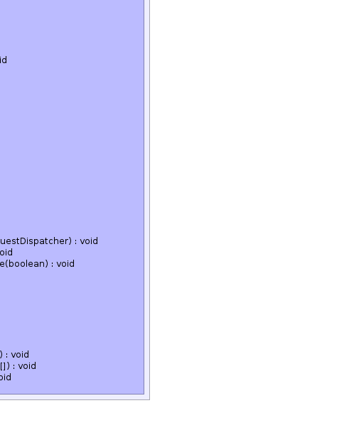

public class MockHttpServletRequest extends Object implements javax.servlet.http.HttpServletRequest
HttpServletRequest where just
enough is present to allow for communication between Mondrian's
XMLA code and other code in the same JVM.
Currently it is used in both the CmdRunner and in XMLA JUnit tests. If you need to add to this implementation, please do so.
|  | |
|  |  |
| Modifier and Type | Class and Description |
|---|---|
static class |
MockHttpServletRequest.MockRequestDispatcher |
(package private) static class |
MockHttpServletRequest.MockServletInputStream |
| Modifier and Type | Field and Description |
|---|---|
static String |
AUTHORIZATION |
static String |
DATE_FORMAT_HEADER |
| Constructor and Description |
|---|
MockHttpServletRequest() |
MockHttpServletRequest(byte[] bytes) |
MockHttpServletRequest(String bodyContent) |
| Modifier and Type | Method and Description |
|---|---|
void |
addCookie(javax.servlet.http.Cookie cookie) |
void |
addHeader(String key,
String value) |
void |
addLocale(Locale locale) |
void |
addLocales(List<Locale> localeList) |
void |
clearAttributes() |
void |
clearHeader(String key) |
void |
clearParameters() |
Object |
getAttribute(String name)
Returns the value of the named attribute as an Object, or null if no
attribute of the given name exists.
|
Enumeration |
getAttributeNames()
to this request.
|
String |
getAuthType()
Returns the name of the authentication scheme used to protect the
servlet, for example, "BASIC" or "SSL," or null if the servlet was not
protected.
|
String |
getCharacterEncoding()
Returns the name of the character encoding used in the body of this
request.
|
int |
getContentLength()
Returns the length, in bytes, of the request body and made available by
the input stream, or -1 if the length is not known.
|
String |
getContentType()
Returns the MIME type of the body of the request, or null if the type is
not known.
|
String |
getContextPath()
Returns the portion of the request URI that indicates the context of the
request.
|
javax.servlet.http.Cookie[] |
getCookies()
Returns an array containing all of the Cookie objects the client sent
with this request.
|
long |
getDateHeader(String name)
Returns the value of the specified request header as a long value that
represents a Date object.
|
String |
getHeader(String name)
Returns the value of the specified request header as a String.
|
Enumeration |
getHeaderNames()
Returns an enumeration of all the header names this request contains.
|
Enumeration |
getHeaders(String name)
Returns all the values of the specified request header as an Enumeration
of String objects.
|
javax.servlet.ServletInputStream |
getInputStream()
Retrieves the body of the request as binary data using a
ServletInputStream.
|
int |
getIntHeader(String name)
Returns the value of the specified request header as an int.
|
String |
getLocalAddr() |
Locale |
getLocale()
Returns the preferred Locale that the client will accept content in,
based on the Accept-Language header.
|
Enumeration |
getLocales()
Returns an Enumeration of Locale objects indicating, in decreasing order
starting with the preferred locale, the locales that are acceptable to
the client based on the Accept-Language header.
|
String |
getLocalName() |
int |
getLocalPort() |
String |
getMethod()
Returns the name of the HTTP method with which this request was made, for
example, GET, POST, or PUT.
|
String |
getParameter(String name)
Returns the value of a request parameter as a String, or null if the
parameter does not exist.
|
Map |
getParameterMap() |
Enumeration |
getParameterNames()
Returns an Enumeration of String objects containing the names of the
parameters contained in this request.
|
String[] |
getParameterValues(String name)
Returns an array of String objects containing all of the values the given
request parameter has, or null if the parameter does not exist.
|
String |
getPathInfo()
Returns any extra path information associated with the URL the client
sent when it made this request.
|
String |
getPathTranslated()
Returns any extra path information after the servlet name but before the
query string, and translates it to a real path.
|
String |
getProtocol()
Returns the name and version of the protocol the request uses in the form
protocol/majorVersion.minorVersion, for example, HTTP/1.1.
|
String |
getQueryString()
Returns the query string that is contained in the request URL after the
path.
|
BufferedReader |
getReader()
Retrieves the body of the request as character data using a
BufferedReader.
|
String |
getRealPath(String path)
Deprecated.
Method getRealPath is deprecated
|
String |
getRemoteAddr()
Returns the Internet Protocol (IP) address of the client that sent the
request.
|
String |
getRemoteHost()
Returns the fully qualified name of the client that sent the request, or
the IP address of the client if the name cannot be determined.
|
int |
getRemotePort() |
String |
getRemoteUser()
Returns the login of the user making this request, if the user has been
authenticated, or null if the user has not been authenticated.
|
javax.servlet.RequestDispatcher |
getRequestDispatcher(String path)
Returns a RequestDispatcher object that acts as a wrapper for the
resource located at the given path.
|
Map<String,javax.servlet.RequestDispatcher> |
getRequestDispatcherMap() |
String |
getRequestedSessionId()
Returns the session ID specified by the client.
|
String |
getRequestURI()
Returns the part of this request's URL from the protocol name up to the
query string in the first line of the HTTP request.
|
StringBuffer |
getRequestURL() |
String |
getScheme()
Returns the name of the scheme used to make this request, for example,
http, https, or ftp.
|
String |
getServerName()
Returns the host name of the server that received the request.
|
int |
getServerPort()
Returns the port number on which this request was received.
|
String |
getServletPath()
Returns the part of this request's URL that calls the servlet.
|
javax.servlet.http.HttpSession |
getSession()
Returns the current session associated with this request, or if the
request does not have a session, creates one.
|
javax.servlet.http.HttpSession |
getSession(boolean create)
Returns the current HttpSession associated with this request or, if if
there is no current session and create is true, returns a new session.
|
Principal |
getUserPrincipal()
Returns a java.security.Principal object containing the name of the
current authenticated user.
|
boolean |
isRequestedSessionIdFromCookie()
Checks whether the requested session ID came in as a cookie.
|
boolean |
isRequestedSessionIdFromUrl() |
boolean |
isRequestedSessionIdFromURL()
Checks whether the requested session ID came in as part of the request
URL.
|
boolean |
isRequestedSessionIdValid()
Checks whether the requested session ID is still valid.
|
boolean |
isSecure()
Returns a boolean indicating whether this request was made using a
secure channel, such as HTTPS.
|
boolean |
isUserInRole(String role)
Returns a boolean indicating whether the authenticated user is included
in the specified logical "role".
|
void |
removeAttribute(String name)
Removes an attribute from this request.
|
void |
setAttribute(String name,
Object obj)
Stores an attribute in this request.
|
void |
setAuthType(String authType) |
void |
setBodyContent(byte[] data) |
void |
setBodyContent(String bodyContent) |
void |
setCharacterEncoding(String charEncoding) |
void |
setContentType(String contentType) |
void |
setContextPath(String contextPath) |
void |
setHeader(String name,
String value) |
void |
setLocalAddr(String localAddr) |
void |
setLocalName(String localName) |
void |
setLocalPort(int localPort) |
void |
setMethod(String method) |
void |
setPathInfo(String pathInfo) |
void |
setPathTranslated(String pathTranslated) |
void |
setProtocol(String protocol) |
void |
setQueryString(String queryString) |
void |
setRemoteAddr(String remoteAddr) |
void |
setRemoteHost(String remoteHost) |
void |
setRemotePort(int remotePort) |
void |
setRemoteUser(String remoteUser) |
void |
setRequestDispatcher(String path,
javax.servlet.RequestDispatcher dispatcher) |
void |
setRequestedSessionId(String requestedSessionId) |
void |
setRequestedSessionIdFromCookie(boolean requestedSessionIdIsFromCookie) |
void |
setRequestURI(String requestedURI) |
void |
setRequestURL(String requestUrl) |
void |
setScheme(String schema) |
void |
setServerName(String serverName) |
void |
setServerPort(int serverPort) |
void |
setServletPath(String servletPath) |
void |
setSession(javax.servlet.http.HttpSession session) |
void |
setupAddParameter(String key,
String value) |
void |
setupAddParameter(String key,
String[] values) |
void |
setUserInRole(String role,
boolean isInRole) |
void |
setUserPrincipal(Principal principal) |
public static String AUTHORIZATION
public static final String DATE_FORMAT_HEADER
public MockHttpServletRequest()
public MockHttpServletRequest(byte[] bytes)
public MockHttpServletRequest(String bodyContent)
public Object getAttribute(String name)
getAttribute in interface javax.servlet.ServletRequestpublic Enumeration getAttributeNames()
getAttributeNames in interface javax.servlet.ServletRequestpublic String getCharacterEncoding()
getCharacterEncoding in interface javax.servlet.ServletRequestpublic void setCharacterEncoding(String charEncoding) throws UnsupportedEncodingException
setCharacterEncoding in interface javax.servlet.ServletRequestUnsupportedEncodingExceptionpublic int getContentLength()
getContentLength in interface javax.servlet.ServletRequestpublic String getContentType()
getContentType in interface javax.servlet.ServletRequestpublic javax.servlet.ServletInputStream getInputStream() throws IOException
getInputStream in interface javax.servlet.ServletRequestIOExceptionpublic String getParameter(String name)
getParameter in interface javax.servlet.ServletRequestpublic Enumeration getParameterNames()
getParameterNames in interface javax.servlet.ServletRequestpublic String[] getParameterValues(String name)
getParameterValues in interface javax.servlet.ServletRequestpublic String getProtocol()
getProtocol in interface javax.servlet.ServletRequestpublic String getScheme()
getScheme in interface javax.servlet.ServletRequestpublic String getServerName()
getServerName in interface javax.servlet.ServletRequestpublic int getServerPort()
getServerPort in interface javax.servlet.ServletRequestpublic BufferedReader getReader() throws IOException
getReader in interface javax.servlet.ServletRequestIOExceptionpublic String getRemoteAddr()
getRemoteAddr in interface javax.servlet.ServletRequestpublic String getRemoteHost()
getRemoteHost in interface javax.servlet.ServletRequestpublic void setAttribute(String name, Object obj)
setAttribute in interface javax.servlet.ServletRequestpublic void removeAttribute(String name)
removeAttribute in interface javax.servlet.ServletRequestpublic Locale getLocale()
getLocale in interface javax.servlet.ServletRequestpublic Enumeration getLocales()
getLocales in interface javax.servlet.ServletRequestpublic boolean isSecure()
isSecure in interface javax.servlet.ServletRequestpublic javax.servlet.RequestDispatcher getRequestDispatcher(String path)
getRequestDispatcher in interface javax.servlet.ServletRequestpublic String getRealPath(String path)
getRealPath in interface javax.servlet.ServletRequestpublic int getRemotePort()
getRemotePort in interface javax.servlet.ServletRequestpublic String getLocalName()
getLocalName in interface javax.servlet.ServletRequestpublic String getLocalAddr()
getLocalAddr in interface javax.servlet.ServletRequestpublic int getLocalPort()
getLocalPort in interface javax.servlet.ServletRequestpublic String getAuthType()
getAuthType in interface javax.servlet.http.HttpServletRequestpublic javax.servlet.http.Cookie[] getCookies()
getCookies in interface javax.servlet.http.HttpServletRequestpublic long getDateHeader(String name)
getDateHeader in interface javax.servlet.http.HttpServletRequestpublic String getHeader(String name)
getHeader in interface javax.servlet.http.HttpServletRequestpublic Enumeration getHeaders(String name)
getHeaders in interface javax.servlet.http.HttpServletRequestpublic Enumeration getHeaderNames()
getHeaderNames in interface javax.servlet.http.HttpServletRequestpublic int getIntHeader(String name)
getIntHeader in interface javax.servlet.http.HttpServletRequestpublic String getMethod()
getMethod in interface javax.servlet.http.HttpServletRequestpublic String getPathInfo()
getPathInfo in interface javax.servlet.http.HttpServletRequestpublic String getPathTranslated()
getPathTranslated in interface javax.servlet.http.HttpServletRequestpublic String getContextPath()
getContextPath in interface javax.servlet.http.HttpServletRequestpublic String getQueryString()
getQueryString in interface javax.servlet.http.HttpServletRequestpublic String getRemoteUser()
getRemoteUser in interface javax.servlet.http.HttpServletRequestpublic boolean isUserInRole(String role)
isUserInRole in interface javax.servlet.http.HttpServletRequestpublic Principal getUserPrincipal()
getUserPrincipal in interface javax.servlet.http.HttpServletRequestpublic String getRequestedSessionId()
getRequestedSessionId in interface javax.servlet.http.HttpServletRequestpublic String getRequestURI()
getRequestURI in interface javax.servlet.http.HttpServletRequestpublic StringBuffer getRequestURL()
getRequestURL in interface javax.servlet.http.HttpServletRequestpublic String getServletPath()
getServletPath in interface javax.servlet.http.HttpServletRequestpublic javax.servlet.http.HttpSession getSession(boolean create)
getSession in interface javax.servlet.http.HttpServletRequestpublic javax.servlet.http.HttpSession getSession()
getSession in interface javax.servlet.http.HttpServletRequestpublic boolean isRequestedSessionIdValid()
isRequestedSessionIdValid in interface javax.servlet.http.HttpServletRequestpublic boolean isRequestedSessionIdFromCookie()
isRequestedSessionIdFromCookie in interface javax.servlet.http.HttpServletRequestpublic boolean isRequestedSessionIdFromURL()
isRequestedSessionIdFromURL in interface javax.servlet.http.HttpServletRequestpublic boolean isRequestedSessionIdFromUrl()
isRequestedSessionIdFromUrl in interface javax.servlet.http.HttpServletRequestpublic Map getParameterMap()
getParameterMap in interface javax.servlet.ServletRequestpublic void setServerName(String serverName)
public void setRemoteHost(String remoteHost)
public void setRemoteAddr(String remoteAddr)
public void setPathInfo(String pathInfo)
public void setPathTranslated(String pathTranslated)
public void setContextPath(String contextPath)
public void setQueryString(String queryString)
public void setRemoteUser(String remoteUser)
public void setRequestedSessionId(String requestedSessionId)
public void setRequestURI(String requestedURI)
public void setServletPath(String servletPath)
public void setLocalName(String localName)
public void setLocalAddr(String localAddr)
public void setAuthType(String authType)
public void setProtocol(String protocol)
public void setRemotePort(int remotePort)
public void setLocalPort(int localPort)
public void setServerPort(int serverPort)
public void setContentType(String contentType)
public void clearParameters()
public void setupAddParameter(String key, String[] values)
public void setupAddParameter(String key, String value)
public void clearAttributes()
public void setSession(javax.servlet.http.HttpSession session)
public Map<String,javax.servlet.RequestDispatcher> getRequestDispatcherMap()
public void setRequestDispatcher(String path, javax.servlet.RequestDispatcher dispatcher)
public void addLocales(List<Locale> localeList)
public void clearHeader(String key)
public void setRequestURL(String requestUrl)
public void setUserPrincipal(Principal principal)
public void addCookie(javax.servlet.http.Cookie cookie)
public void setRequestedSessionIdFromCookie(boolean requestedSessionIdIsFromCookie)
public void setUserInRole(String role, boolean isInRole)
public void setBodyContent(byte[] data)
public void setBodyContent(String bodyContent)